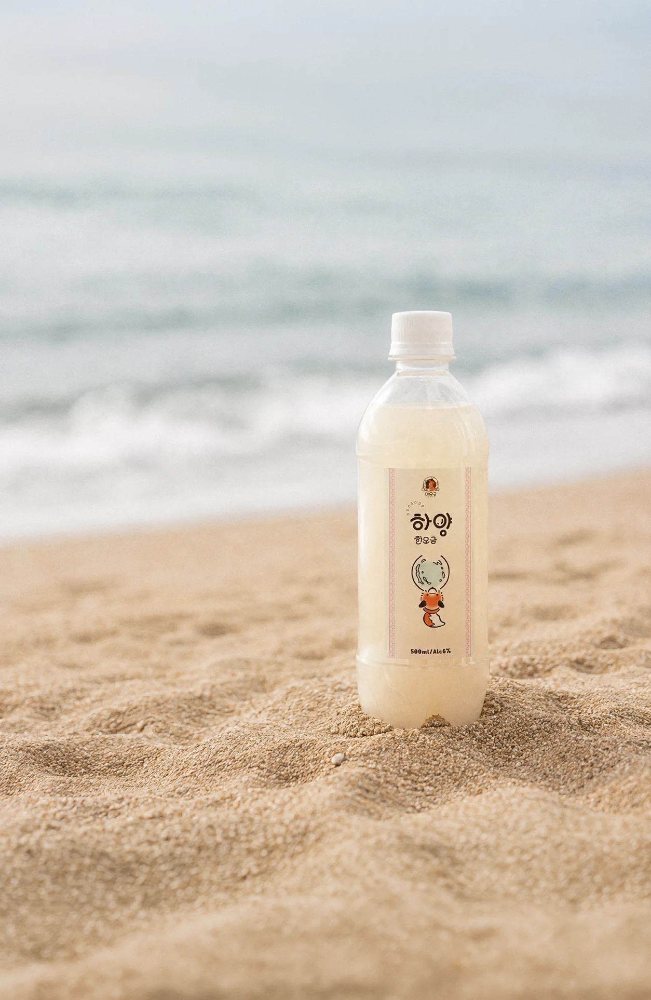
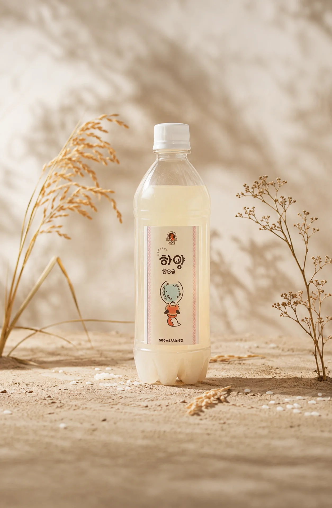
탁하지 않고 맑아서 목 넘김이 가볍습니다.
달지 않고 드라이한 편이라 뒤가 깔끔하고요.
가볍고 맑은 맛, 첫 술로 드시기 좋은 하양 한 모금입니다.
오늘 술을 안치면 병에 들어가는 건 한 달 뒤입니다.
발효를 마치고도 일주일을 더 두는 건,
맛이 숙성되는 데 그만큼의 시간이 필요해서입니다.
탁한 술일수록 숙취가 있고,
덜 익은 술일수록 더 그렇습니다.
술이 완성되는 동안 날아가야 할 것들이 있거든요.
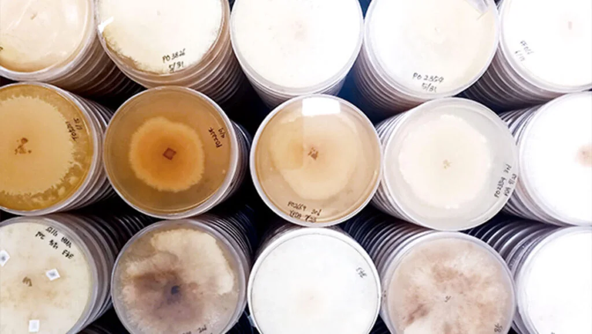
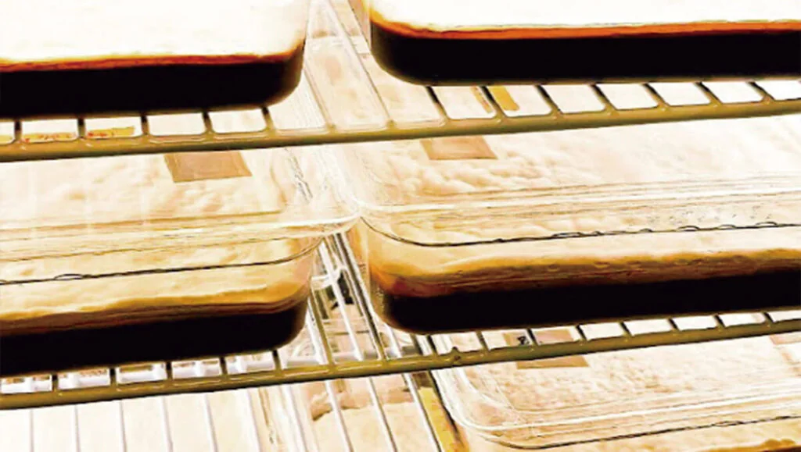
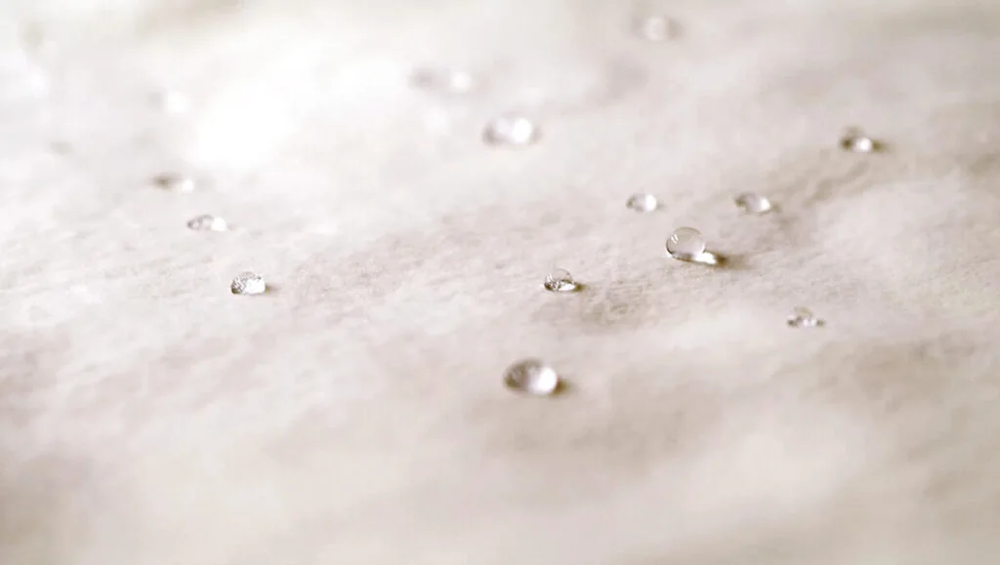
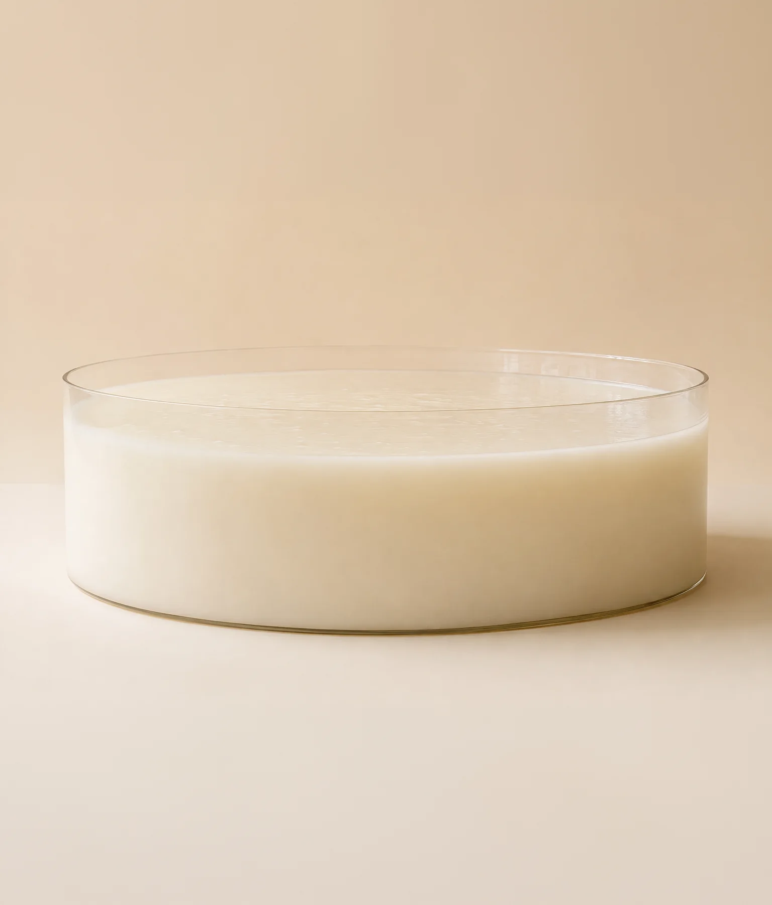
하양한모금을 처음 드신다면
조금 어렵거나 밍밍하게 느껴질 수 있어요.
그런데 평양냉면이 그렇듯,
한 번 각인된 맛은 문득 떠오릅니다.
이상하게 자꾸 생각나는 맛이거든요.
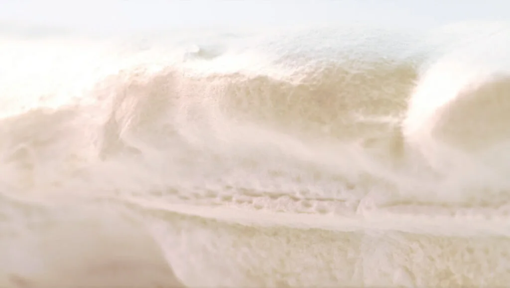
술은 눌러 짜낼수록 많이 나옵니다.
대신 마지막까지 짜면
원하지 않는 맛도 함께 따라 나옵니다.
예로부터 술독에 용수를 박아
맑은 부분만 떠낸 것도 같은 이유입니다.
하양한모금은 마지막 압착 공정을 생략합니다.
같은 원료로 남들보다 적게 만들고, 그만큼 덜 남깁니다.
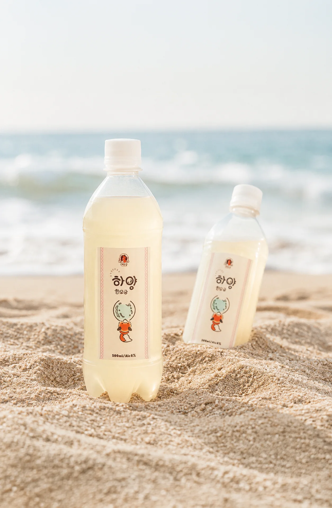
냉장고에 두면 발효가 아주 천천히 계속됩니다.
한 병은 바로, 한 병은 두어 달 뒤에 드셔보세요.
같은 술인데 다른 술처럼 다가옵니다.
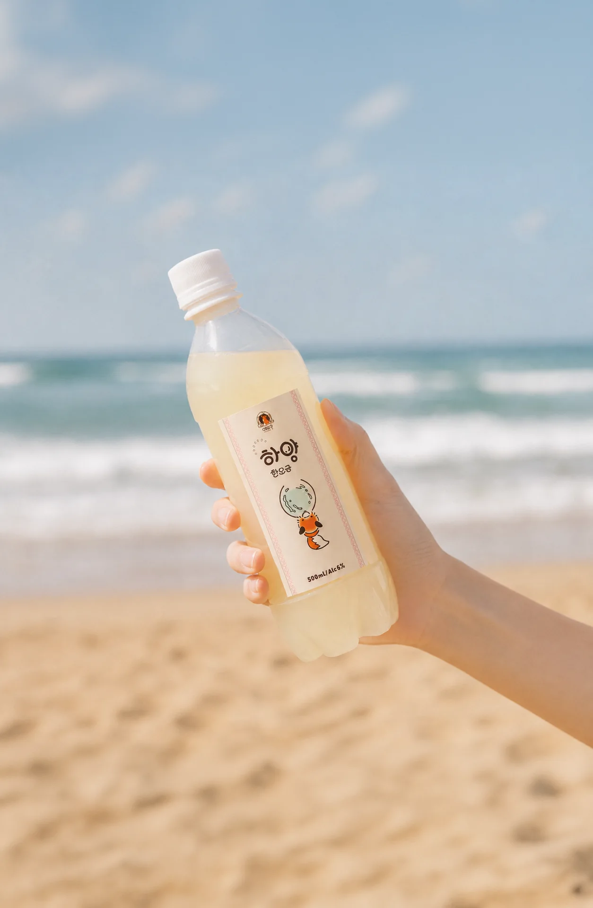
탄산이 있는 막걸리는 대개 ‘숨 쉬는 뚜껑’을 씁니다.
그렇게 하지 않으면 병이 터져버리니까요.
대신 눕히면 줄줄 새고 흐르는 문제가 생기죠.
하양한모금은 내압병에 내압뚜껑을 사용합니다.
5개월 동안 병 안에서 생기는 탄산을
견디도록 만들어두었습니다.
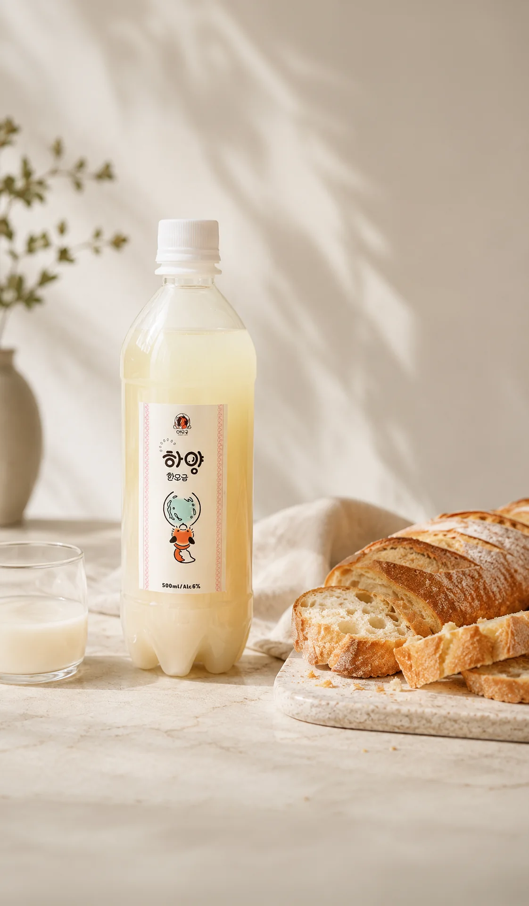
막걸리의 단짝, 전이나 튀김도 좋지만
하양한모금은 조금 다른 곁들임을 추천합니다.
마켓, 시음회에서 늘 내어드리는 안주는 바게트입니다.
한 번씩 갸웃하시다가도
한 모금 맛보고 나면 고개를 끄덕이게 되죠.
| 품명 | 하양 한모금 |
|---|---|
| 주종 | 탁주 |
| 용량 | 500ml |
| 도수 | 6도 |
| 유통기한 | 제조일로부터 5개월 |
| 보관 | 냉장 |
| 원료 | — |
| 제조 | 여우굴 양조장 |
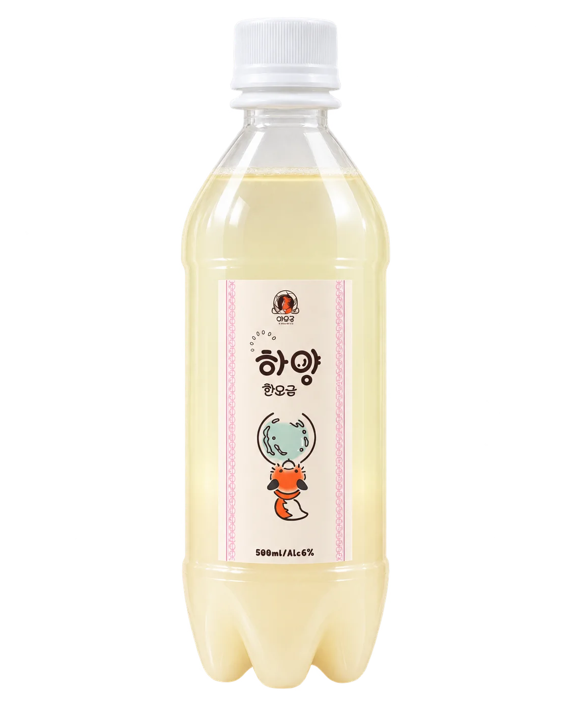
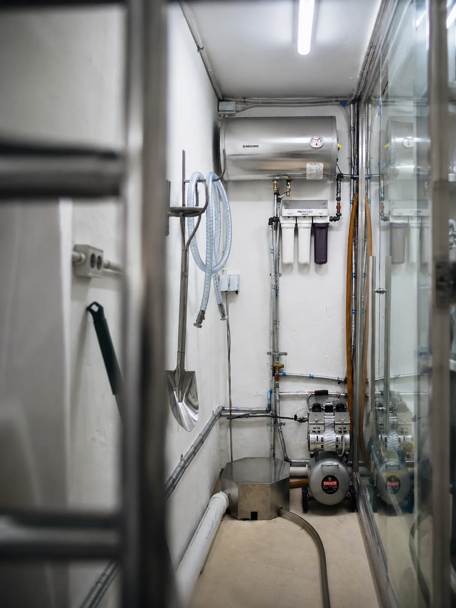
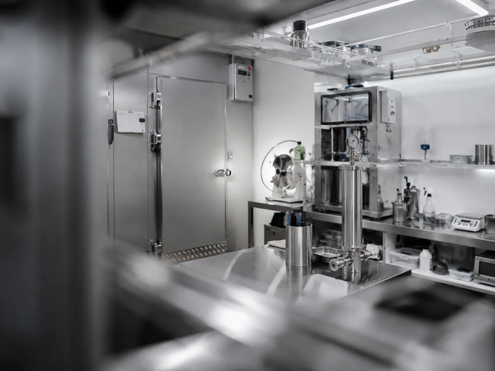
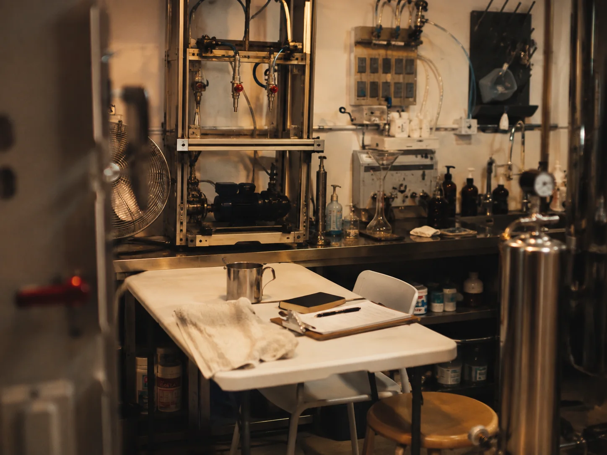
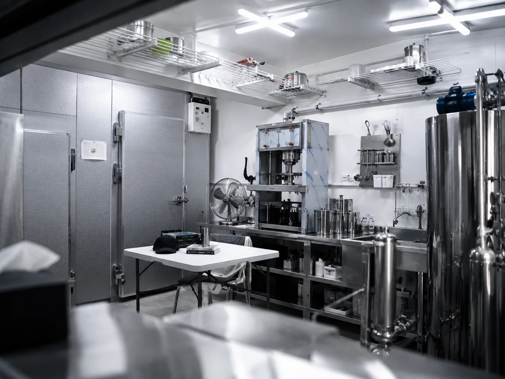
간판 없는 가게에서 여우가 술을 빚고 있습니다.
하양한모금이 어떻게 만들어지는지 궁금하신 분,
직접 막걸리를 담가보고 싶으신 분들을 위해
막걸리 빚기 원데이 클래스를 열고 있습니다.
구매, 시음, 도소매 납품,
행사, 협찬 등
편하게 문의 바랍니다.